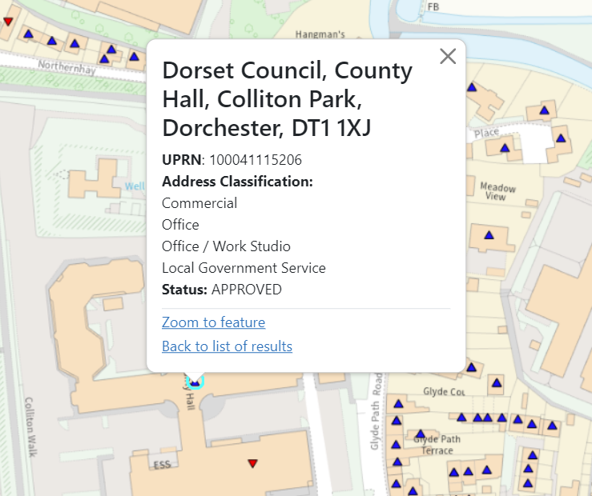

Layers¶
Layers are the bedrock of GIFramework Maps. Without layers, your maps are basically useless.
Layers are pretty configurable, and have lots of various options.
There are three parts to creating a layer: layer sources, layer details and layer categories.
You can manually create a layer, or use the wizard. We highly recommend you use the wizard, even if you have to make changes to what it generates, as it reduces the chance of getting anything wrong.
Add a new layer using the wizard¶
Using the wizard is the most straightforward way to get a layer into your map. Choose the 'Add Layer Wizard' option from the Layers management page.
You will have two options, WMS/WFS and XYZ/TMS.
Add a layer from a WMS or WFS service¶
You can choose from the list of pre-defined web service definitions, or enter a GetCapabilities URL to retrieve a list of layers.
Once you've found the layer you want to add, check the projection and format and change them if necessary, and then hit Add.
You will be taken to a page to check and update the details if necessary. Most of the details should have been pre-filled for you.
- Name - a friendly name for administrators. This is automatically taken from the Title of the WMS layer if available
- Description - a basic description of the layer. This is shown to end users when the layer has no other description metadata available from source. This is automatically taken from the Abstract of the WMS layer if available
- Layer type - choose the type. This will default to TileWMS for WMS, or Vector for WFS. These are normally the right options, but you can change this depending on your requirements. Check the help documentation on Layer types for more information
- Attribution - the attribution you want your layer to use. If the service provided an attribution string, the system will attempt to find the best match in your list of attributions and pre-select it. This can generate false positives, and often services do not provide an attribution string, so you'll need to check this and set it yourself.
- Projection - The projection of the data you will be requesting. If you selected 'auto' on the previous screen, this will be blank. If its blank, the layer will automatically request data in the projection of the map its within. See Auto Projection below for more information.
There is a collapsible section for 'Advanced settings'. You should generally leave this alone as it contains details that will be used behind the scenes to make your layer work. However, you can edit them if you need to.
- Base URL - This should be set to the 'base' url of the WMS service. This is normally provided to you by the service, and will look something like
https://<service-url>/wms - Layer Name - This is the name of the layer in the web service, not the name that users will see. This name will be used by OpenLayers to make appropriate requests to the service.
- Format - The image format that will be used. This was available to select from the previous screen, so if you want something different, you should go back and select from the list.
- Version - The WMS version you will be using. This will generally be 1.1.0 or 1.3.0 and will have been selected for you, but you can override it here if you know what you are doing.
- Require use of proxy? - Indicates whether this layer source requires the proxy. Will have been pre-selected for you based on your choices on the previous screen.
Limitation
Vectors cannot currently have a filter pre-applied to them. Users can apply filters to WFS based layers manually.
Styling Vector layers¶
Warning
This functionality is still in the early stages and there may be bugs and other issues. Use with caution.
Vector layers work differently from WMS based layers. With vector data, styling is done on the client, so you need to provide styling rules to the application to tell it how to style a layer, otherwise you will get the OpenLayers defaults of blue dots/lines/polygons.
Note
KML layers work a little different. They can have styling information built in, so if you don't provide a style rule, it will use that.
Styling rules can either be provided as a URL or as a full JSON object, either in GeoStyler style format, Mapbox style format, or as an OpenLayers flat style. The easiest thing to do is to use the GeoStyler demo page and add your data (or a sample of it) and use the UI to style it how you want, or to import an SLD from GeoServer or QGIS into the GeoStyler demo, and convert it to GeoStyler style format.
Auto Projection¶
GIFramework Maps will automatically request data in the projection of the map it is within unless you specifically set a projection. Auto projection is ideal in most cases where the server the data is coming from is able to handle the projections you want. However, if the server hosting the source data does not handle the projection of the map, you will need to explicitly set the projection on the layer source. GIFramework Maps will then handle the reprojection required to display it properly. If you aren't sure, set the projection to one advertised by the server as compatible.
Add a layer from an XYZ/TMS template¶
You can enter an XYZ/TMS URL template to create a layer.
This follows the widely-used Google grid where x 0 and y 0 are in the top left. Grids like TMS where x 0 and y 0 are in the bottom left can be used by using the {-y} placeholder in the URL template, so long as the source does not have a custom tile grid.
Must include {x}, {y} or {-y}, and {z} placeholders. A {?-?} template pattern, for example subdomain{a-f}.domain.com, may be used to split traffic across multiple domains.
Example
For the OpenStreetMap tile server, you would use
https://tile.openstreetmap.org/{z}/{x}/{y}.png
This is just an example. Do not use the OpenStreetMap tile server for heavy workloads.
When you hit 'Create XYZ source' you will be taken to a page to check and update the details if necessary.
- Name - a friendly name for administrators
- Description - a basic description of the layer
- Attribution - the attribution you want your layer to use
There is a collapsible section for 'Advanced settings'. You should generally leave this alone as it contains details that will be used behind the scenes to make your layer work. However, you can edit them if you need to.
- URL Template - This is what you entered on the previous screen. If you made a mistake you can update it here.
- Projection - If the layer is NOT in the standard EPSG:3857, you can put an alternative projection here. You will also need to enter a custom tile grid.
- Custom tile grid - To make use of on the fly reprojection, you need to provide an appropriate custom tile grid, describing the resolutions and origins of the XYZ layer. The service provider should be able to provide this. It will be a simple JSON object
- Minimum source zoom level (optional) - the minimum published zoom level this source has available. Setting these options allows you to make use of over and under-zooming the source. Leave blank for no minimum
- Maximum source zoom level (optional) - the maximum published zoom level this source has available. Setting these options allows you to make use of over and under-zooming the source. Leave blank for no maximum
Example
The custom tile grid for British National Grid EPSG:27700 is
{
"resolutions": [896.0, 448.0, 224.0, 112.0, 56.0, 28.0, 14.0, 7.0, 3.5, 1.75],
"origin": [-238375.0, 1376256.0]
}
Over and under-zooming
By setting a max source zoom level, you tell the map not to request tiles for anything beyond this level. You can then set the max zoom level on the layer itself to be a higher number, and the layer will still be visible, but won't request new tiles, instead it will just zoom in. This is great for layers where you want people to see beyond the level that is published by the server. Use with care, as too much over-zooming will degrade the quality, and too much under-zooming will make the map unreadable.
Adding non-WFS based vector layers¶
GIFramework Maps can also render vector layers from a non-WFS source, such as a KML or GeoJSON file on a web server or a non OGC API that is capable of producing valid GeoJSON. This cannot be done using the layer wizard, and must be manually added by creating a layer source with the appropriate parameters. Check the documentation on adding a layer manually for more details.
The layer details screen¶
When you've created a source, or if you are editing an existing layer, you will see the layer details screen.
- Name
- Minimum viewable zoom level (optional) - the minimum zoom this layer will be turned on for, for example if set to 12, the layer will turn off once you zoom out past level 12
- Maximum viewable zoom level (optional) - the maximum zoom this layer will be turned on for, for example if set to 15, the layer will turn off once you zoom in past level 15. Set to blank for no restriction
- Layer Z-Index - this is the 'layer order' on the map. Higher numbers will, by default, appear above lower numbers when both layers are turned on. For things like Aerial Photography, this should generally be set very low (such as -500). Leave blank for default of 0
- Info List Template - the template for what appears when you click multiple items and are presented with a list of features. See Info Templates below for more information
- Info Template - the template for what appears when you select a single map feature. See Info Templates below for more information
- Queryable - whether you want the layer to be queryable (clicking on a feature will display further information)
- Filterable - whether you want the layer to be filterable
Note
If you are creating a layer for an XYZ/TMS source, some options will not be available
You'll also see a button for Advanced settings, which are optional.
- Restricted bounds (optional) - The maximum bounds this layer covers. This will restrict map rendering and querying outside of these bounds, which can improve performance and prevent areas you don't want shown from appearing.
- Default Opacity - The opacity (transparency) of the layer when you first turn it on. Users can override this value.
- Default Saturation - The saturation of the layer when you first turn it on. Users can override this value.
- Default filter is editable - Whether any default filters applied to the layer source are editable by end users.
- Proxy Map Requests - Whether GetMap requests should go via the Proxy
- Proxy Map Requests - Whether Feature Info and other metadata requests should go via the Proxy
Info Templates¶
Info templates control how the user see's data when they click an item on the map. Templates are a powerful feature that allows you to convert the unfriendly attribute based tables returned from a service into friendly, human readable popups. There are two info templates used by GIFramework Maps.
- Info Template - The template for what appears when you select a single map feature

- Info List Template - The template for what appears when you select multiple map features and are presented with a list of features

The templates use a system called nunjucks for templating. You can read their documentation or the section below for advanced uses. For basic uses, you simply write standard HTML, and use the placeholder {{COLUMN_NAME}} to inject attributes into the template.
Example
Template (assuming there are attributes called ADDRESS and UPRN):
<h1>{{ADDRESS}}</h1><p><strong>UPRN:</strong> {{UPRN}}</p>
Output:
<h1>1 Somewhere Drive, Someplace, SM1 1AA</h1><p><strong>UPRN: </strong> 10010101001</p>
Info List Templates are simpler, and are designed for a single line of text with placeholders. It still uses nunjucks and the placeholder {{COLUMN_NAME}}, but should be kept simple as there may be many results listed.
Warning
Avoid using HTML in an info list template. The template is injected into an <a> tag within a <li> tag, so adding further HTML may cause unexpected results.
Example
Template (assuming there is an attribute called ADDRESS):
Address: {{ADDRESS}}
Output:
Address: 1 Somewhere Drive, Someplace, SM1 1AAAddress: 2 Somewhere Drive, Someplace, SM1 1AAAddress: 3 Somewhere Drive, Someplace, SM1 1AA
The admin interface has template helpers for the Info List Template and Info Template. These helpers allow you to build your template with HTML tags and appropriate attributes.
- HTML tags (Info Templates only) - Gives you all the basic opening and closing tags for headers, paragraphs, basic styling and images. See the MDN docs on HTML basics to learn more.
- Attributes - Gives you a list of all the attributes available in the layer source you selected. Clicking them will insert that attribute into the template, surrounded by curly braces. In some instance we may not be able to get the attributes from the service. This can often be a warning that the service will not be queryable, so you will need to check. In these cases you will get a warning and will have to write your template manually.
- Date formatting - Gives you some helpers to insert date formatting strings. See date formatting below for more detail.
- Preview - The preview will show you how your template will be rendered by grabbing a real feature from the service and rendering your template. In some instance we may not be able to get a feature from the service, so the preview won't work.
Advanced templating¶
There are a number of advanced features built into the templating engine to allow for some smart customisation.
Date formatting¶
You can apply custom date formatting to datetime attributes to make them more user friendly.
Warning
This is a custom extension to nunjucks and not part of the standard nunjucks templating engine
To apply basic datetime formatting, simply add | date after your attribute name. For example {{DATE_ATTRIBUTE | date}} will attempt to render the attribute DATE_ATTRIBUTE using the toLocaleDateString() JavaScript function. In en-GB locales this would convert the ISO date 2023-02-07T17:10:00.000Z to 07/02/2023.
You can also apply custom formatting by passing a format string to the date function. For example {{DATE_ATTRIBUTE | date('yyyy')}} will convert the ISO date 2023-02-07T17:10:00.000Z to 2023. This custom formatting is applied using a library called luxon, who provide a table of tokens you can use.
Examples
Assuming an attribute called DATE_ATTRIBUTE with the value 2023-02-07T17:10:00.000Z (Feb 7th, 2023 at 17:10)
{{DATE_ATTRIBUTE | date}}07/02/2023(assumingen-GBlocale, will be different depending on users locale){{DATE_ATTRIBUTE | date('yyyy')}}2023{{DATE_ATTRIBUTE | date('ccc dd LLLL yyyy T')}}Tuesday 07 February 2023 17:10
Conditionals¶
You can use basic if statements to conditionally show/hide content in a template or render it in a different way.
Info
You can read the full documentation on if statements in nunjucks in their documentation
If statements are very simple and flexible. A basic example is
{% if attribute === 'something' %}
It is something
{% endif %}
attribute is equal to 'something'. Everything between the tags can include placeholders and HTML as normal.
For example, the following will wrap the STATUS attribute in a <span> with the class text-danger (rendering it as red text) if the STATUS is 'Closed', otherwise it will not wrap it in anything.
{% if STATUS === 'Closed' %}
<span class="text-danger">{{STATUS}}</span>
{% else %}
{{STATUS}}
{% endif %}
Everything else¶
There are many more helpers available. The best way to find out more is to read the nunjucks templating documentation.
Some useful ones you might consider:
- Math - Perform simple math operations
- capitalize - Make the first letter uppercase, the rest lower case
- int - Convert the value into an integer. If the conversion fails 0 is returned.
- lower - Convert string to all lower case
- round - Round a number
- truncate - Return a truncated copy of the string
- upper - Convert the string to upper case
Add a new layer manually¶
You can create a layer manually by
- Creating a Layer Source
- Adding the relevant Layer Source Options
- Adding a layer
- Adding it to a category
Warning
We strongly suggest you use the wizard, even if you use it just to create the basics, then edit it as you need. Creating a layer source incorrectly can result in your entire map not loading correctly.
Layer sources¶
This section covers where your layers come from. Select Add new layer source and fill in the details:
- Name - a friendly name for administrators
- Description - a basic description of the layer. This is shown to end users when the layer has no other description metadata available from source
- Layer type - choose the type
- Attribution - the attribution you want your layer to use
Tick the Create layer source option on save box to automatically fill in details that will appear on the right side of the screen. You can edit these manually if you need to, but you will need to know what you are doing. For more detailed information on these options, see database layers.
Layer details¶
This section is where you add in the details for your layers. Select Add new layer, you will be prompted to pick a layer source from the list. Fill in the details:
- Name
- Minimum viewable zoom level (optional) - the minimum zoom this layer will be turned on for, for example if set to 12, the layer will turn off once you zoom out past level 12
- Maximum viewable zoom level (optional) - the maximum zoom this layer will be turned on for, for example if set to 15, the layer will turn off once you zoom in past level 15. Set to blank for no restriction
- Layer Z-Index - this is the 'layer order' on the map. Higher numbers will, by default, appear above lower numbers when both layers are turned on. For things like Aerial Photography, this should generally be set very low (such as -500). Leave blank for default of 0
- Info List Template - the template for what appears when you click multiple items and are presented with a list of features. See Info Templates for more information
- Info Template - the template for what appears when you select a single map feature. See Info Templates for more information
- Queryable - whether you want the layer to be queryable (clicking on a feature will display further information)
- Filterable - whether you want the layer to be filterable
You'll also see a button for Advanced settings, which are optional.
- Disclaimer: The disclaimer to show when this layer is turned on. See Layer Disclaimers.
- Restricted bounds: Allows you to prevent a layer from being rendered or query outside of the defined bounds
- Opacity/Saturation: Set the default starting opacity and saturation of this layer. Can be overridden by Layer Customisations or via the URL permalink
- Default filter is editable: If a layer has a filter applied to it via a CQL_FILTER, ticking this box allows users to edit that filter. By default, that filter will be 'locked' and can't be edited by users
- Proxy Map Requests: Allows you to get round server CORS issues by proxying the requests via the in-built proxy server
- Proxy Metadata Requests: Allows you to get round server CORS issues by proxying the requests via the in-built proxy server
- Refresh interval (seconds): Set how often this layer will automatically refresh data from the server without user intervention.
Layer categories¶
This section is where you manage the categories that layers are organised into. Select Create new category and fill in the details:
- Name
- Description
- Order - the sort order you want your category to appear
- Parent category (optional) - select a parent category if the category you are creating is a child category
On the right side of the screen, you'll be able to select all the layers you want to appear in your category.
Edit a layer¶
Select the section then layer you want to edit. Make the changes you want and hit Save.
Delete a layer¶
Select the section then layer you want to delete. You will be asked if you're sure, press Delete again to confirm.
Layer Disclaimers¶
You can add popup disclaimers to your layers that show when a user turns on a layer. The first step is to add a new disclaimer with the details you need.
- Name: A friendly name for administrators
- Disclaimer: The disclaimer to show. This can be plain text or HTML
- Frequency: How often you want the disclaimer to show. The options are:
- Just once: Will only show once in that browser
- Always (once per session): Will show a maximum of once per browsing session. Refreshes do not count as a new session, but new tabs do. This prevents users from constantly being bombarded with the message every time they turn the layer on/off
- Once a (day/week/month etc.): Shows once per period shown
- Dismiss Text: Optional text to show on the dismiss button. Defaults to 'Close' if you leave it blank
Once you've created the disclaimer, you can go to your layer and set the disclaimer in the Advanced settings of the layer.
Disclaimers work using the browsers localStorage and sessionStorage. If a user changes browser, or clears their localStorage, they will see the disclaimer again.
Tip
Multiple layers can share the same disclaimer. This not only saves you from having to write multiple similar disclaimers, it also allows you to 'bundle' disclaimers together, so if you have a bunch of layers that all need the same disclaimer, the user will only see the warning once, not for every layer they click
Limitations
If a layer is already turned on (either through layer customisations or via a share link) the disclaimer will not trigger unless the user turns the layer off and back on. This is to prevent being potentially bombarded with disclaimers on first load.